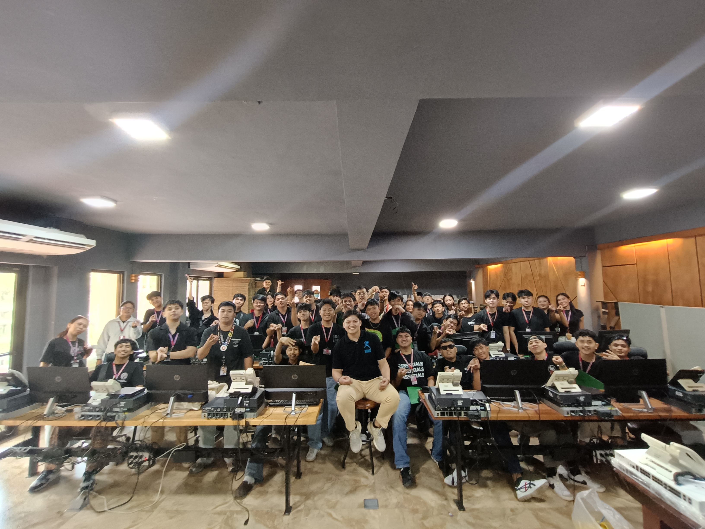
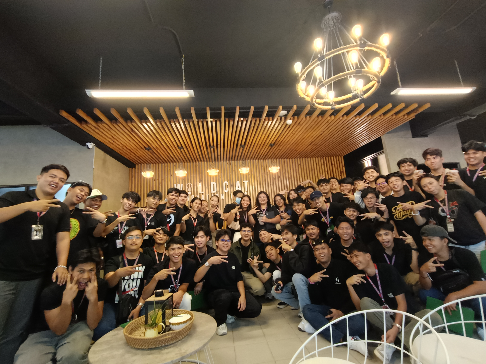
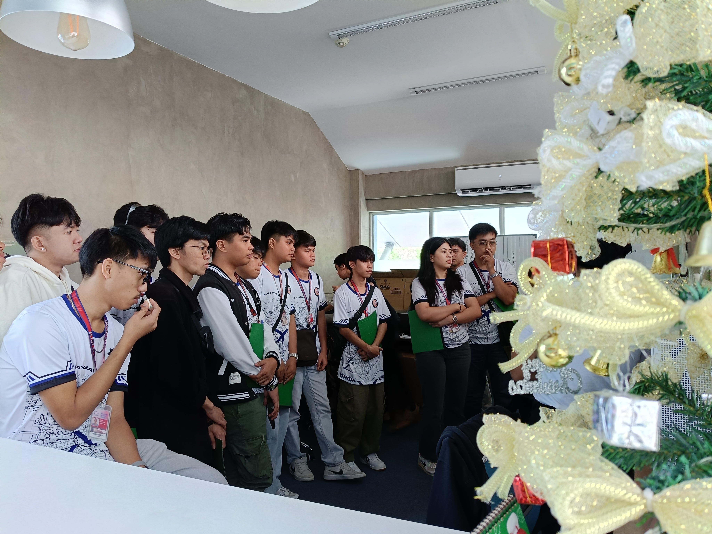
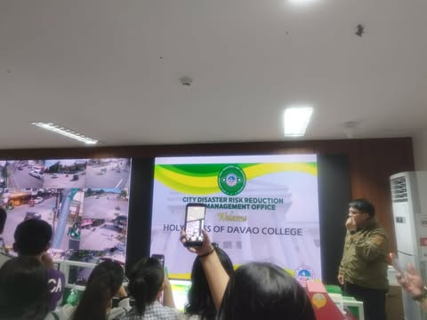

WORLDTECH INFORMATION SOLUTION, INC.

Facilitator: Elizabeth Arquiza
Observations:
In my cybersecurity observations, I noticed that many passwords are easy to guess, often using common words or simple number patterns. I also observed that some users reuse the same password across multiple accounts, which increases the risk of unauthorized access.
Learnings:
Learning cybersecurity means understanding how to protect computers, networks, and data from various threats. It also involves recognizing the importance of strong passwords and safe online practices.
Rivan IT CEBU
Facilitator: Vincent Victor
Observations:
During the activity at Rivan IT Cebu, we engaged in hands-on networking practice, which allowed us to apply the concepts we previously learned in class. I observed how important proper cable management is in maintaining an organized and efficient workspace.
Learning:
I learned how to connect a telephone device to the network, including identifying the correct ports and ensuring that the cables are securely attached. I also learned how different devices communicate within a network and how proper configuration makes a big difference in functionality.
CODECHUM
Facilitator: Xavier David Maranga
Observations:
The platform emphasizes hands-on coding through interactive exercises, allowing learners to immediately apply what they’ve learned. I observed that the step-by-step approach helps users better understand complex programming concepts.
Learning:
The user-friendly interface shows how important good design is in ed-tech, especially in keeping learners motivated and focused. I learned that intuitive layouts and clear instructions can significantly improve the learning experience.
MATA TECHNOLOGIES, INC.
Facilitator: Suzzette Caminero, Sir Snow
Observations:
Mata Technologies specializes in 360° virtual tours and VR mapping, offering immersive digital experiences for various industries. I observed how their technology allows users to navigate spaces as if they were physically present, which is highly useful for real estate, tourism, and education.
Learning:
I learned how 360° virtual tours are made using panoramic cameras, which capture wide-angle views from multiple perspectives. I also learned about the stitching process, where software combines these images seamlessly to form a complete virtual environment.
TAGBILARAN CDRRMO OPERATIONS CENTER
Facilitator:
Observations:
The Tagbilaran CDRRMO works similarly to Davao City's 911 emergency center, providing rapid response and coordinated action during emergencies. I observed how their team monitors various situations in real time through communication systems, CCTV feeds, and radio channels.
Learning:
TThe CDRRMO is responsible for disaster preparedness, response, and recovery, ensuring that the community is guided before, during, and after emergencies. I learned about the importance of risk assessment and how they plan for different types of hazards such as floods, fires, and earthquakes.